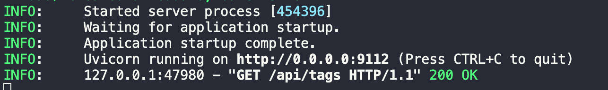

🎉 Introduction
KTransformers, pronounced as Quick Transformers, is designed to enhance your 🤗 Transformers experience with advanced kernel optimizations and placement/parallelism strategies.KTransformers is a flexible, Python-centric framework designed with extensibility at its core. By implementing and injecting an optimized module with a single line of code, users gain access to a Transformers-compatible interface, RESTful APIs compliant with OpenAI and Ollama, and even a simplified ChatGPT-like web UI.
Our vision for KTransformers is to serve as a flexible platform for experimenting with innovative LLM inference optimizations. Please let us know if you need any other features.
🔥 Updates
- Mar 5, 2025: Support unsloth 1.58/2.51 bits weights and IQ1_S/FP8 hybrid weights. Support 139K Longer Context for DeepSeek-V3 and R1 in 24GB VRAM.
- Feb 25, 2025: Support FP8 GPU kernel for DeepSeek-V3 and R1; Longer Context.
- Feb 10, 2025: Support Deepseek-R1 and V3 on single (24GB VRAM)/multi gpu and 382G DRAM, up to 3~28x speedup. The detailed tutorial is here.
- Aug 28, 2024: Support 1M context under the InternLM2.5-7B-Chat-1M model, utilizing 24GB of VRAM and 150GB of DRAM. The detailed tutorial is here.
- Aug 28, 2024: Decrease DeepseekV2's required VRAM from 21G to 11G.
- Aug 15, 2024: Update detailed TUTORIAL for injection and multi-GPU.
- Aug 14, 2024: Support llamfile as linear backend.
- Aug 12, 2024: Support multiple GPU; Support new model: mixtral 8*7B and 8*22B; Support q2k, q3k, q5k dequant on gpu.
- Aug 9, 2024: Support windows native.
How to Run DeepSeek-R1
In this document, we will show you how to install and run KTransformers on your local machine. There are two versions:
- V0.2 is the current main branch.
- V0.3 is a preview version only provides binary distribution for now.
- To reproduce our DeepSeek-R1/V3 results, please refer to Deepseek-R1/V3 Tutorial for more detail settings after installation.
Preparation
Some preparation:
-
CUDA 12.1 and above, if you didn't have it yet, you may install from here.
# Adding CUDA to PATH if [ -d "/usr/local/cuda/bin" ]; then export PATH=$PATH:/usr/local/cuda/bin fi if [ -d "/usr/local/cuda/lib64" ]; then export LD_LIBRARY_PATH=$LD_LIBRARY_PATH:/usr/local/cuda/lib64 # Or you can add it to /etc/ld.so.conf and run ldconfig as root: # echo "/usr/local/cuda-12.x/lib64" | sudo tee -a /etc/ld.so.conf # sudo ldconfig fi if [ -d "/usr/local/cuda" ]; then export CUDA_PATH=$CUDA_PATH:/usr/local/cuda fi -
Linux-x86_64 with gcc, g++ and cmake (using Ubuntu as an example)
sudo apt-get update sudo apt-get install build-essential cmake ninja-build -
We recommend using Miniconda3 or Anaconda3 to create a virtual environment with Python=3.11 to run our program. Assuming your Anaconda installation directory is
~/anaconda3, you should ensure that the version identifier of the GNU C++standard library used by Anaconda includesGLIBCXX-3.4.32conda create --name ktransformers python=3.11 conda activate ktransformers # you may need to run ‘conda init’ and reopen shell first conda install -c conda-forge libstdcxx-ng # Anaconda provides a package called `libstdcxx-ng` that includes a newer version of `libstdc++`, which can be installed via `conda-forge`. strings ~/anaconda3/envs/ktransformers-0.3/lib/libstdc++.so.6 | grep GLIBCXX -
Make sure that PyTorch, packaging, ninja is installed You can also install previous versions of PyTorch
pip3 install torch torchvision torchaudio --index-url https://download.pytorch.org/whl/cu126 pip3 install packaging ninja cpufeature numpy -
At the same time, you should download and install the corresponding version of flash-attention from https://github.com/Dao-AILab/flash-attention/releases.
Installation
Attention
If you want to use numa support, not only do you need to set USE_NUMA=1, but you also need to make sure you have installed the libnuma-dev (sudo apt-get install libnuma-dev may help you).
-
Download source code and compile:
-
init source code
git clone https://github.com/kvcache-ai/ktransformers.git cd ktransformers git submodule init git submodule update -
[Optional] If you want to run with website, please compile the website before execute
bash install.sh -
For Linux
-
For simple install:
bash install.sh -
For those who have two cpu and 1T RAM:
# Make sure your system has dual sockets and double size RAM than the model's size (e.g. 1T RAM for 512G model) apt install libnuma-dev export USE_NUMA=1 bash install.sh # or #make dev_install
-
-
For Windows
install.bat
-
-
If you are developer, you can make use of the makefile to compile and format the code.
the detailed usage of makefile is here
Local Chat
We provide a simple command-line local chat Python script that you can run for testing.Note: this is a very simple test tool only support one round chat without any memory about last input, if you want to try full ability of the model, you may go to RESTful API and Web UI.
Run Example
# Begin from root of your cloned repo!
# Begin from root of your cloned repo!!
# Begin from root of your cloned repo!!!
# Download mzwing/DeepSeek-V2-Lite-Chat-GGUF from huggingface
mkdir DeepSeek-V2-Lite-Chat-GGUF
cd DeepSeek-V2-Lite-Chat-GGUF
wget https://huggingface.co/mradermacher/DeepSeek-V2-Lite-GGUF/resolve/main/DeepSeek-V2-Lite.Q4_K_M.gguf -O DeepSeek-V2-Lite-Chat.Q4_K_M.gguf
cd .. # Move to repo's root dir
# Start local chat
python -m ktransformers.local_chat --model_path deepseek-ai/DeepSeek-V2-Lite-Chat --gguf_path ./DeepSeek-V2-Lite-Chat-GGUF
# If you see “OSError: We couldn't connect to 'https://huggingface.co' to load this file”, try：
# GIT_LFS_SKIP_SMUDGE=1 git clone https://huggingface.co/deepseek-ai/DeepSeek-V2-Lite
# python ktransformers.local_chat --model_path ./DeepSeek-V2-Lite --gguf_path ./DeepSeek-V2-Lite-Chat-GGUF
It features the following arguments:
-
--model_path(required): Name of the model (such as "deepseek-ai/DeepSeek-V2-Lite-Chat" which will automatically download configs from Hugging Face). Or if you already got local files you may directly use that path to initialize the model.Note: .safetensors files are not required in the directory. We only need config files to build model and tokenizer.
-
--gguf_path(required): Path of a directory containing GGUF files which could that can be downloaded from Hugging Face. Note that the directory should only contains GGUF of current model, which means you need one separate directory for each model. -
--optimize_config_path(required except for Qwen2Moe and DeepSeek-V2): Path of YAML file containing optimize rules. There are two rule files pre-written in the ktransformers/optimize/optimize_rules directory for optimizing DeepSeek-V2 and Qwen2-57B-A14, two SOTA MoE models. -
--max_new_tokens: Int (default=1000). Maximum number of new tokens to generate. -
--cpu_infer: Int (default=10). The number of CPUs used for inference. Should ideally be set to the (total number of cores - 2).
Supported Models/quantization
Supported models include:
| ✅ Supported Models | ❌ Deprecated Models |
|---|---|
| DeepSeek-R1 | |
| DeepSeek-V3 | |
| DeepSeek-V2 | |
| DeepSeek-V2.5 | |
| Qwen2-57B | |
| DeepSeek-V2-Lite | |
| Mixtral-8x7B | |
| Mixtral-8x22B |
Support quantize format:
| ✅ Supported Formats | ❌ Deprecated Formats |
|---|---|
| Q2_K_L | |
| Q2_K_XS | |
| Q3_K_M | |
| Q4_K_M | |
| Q5_K_M | |
| Q6_K | |
| Q8_0 |
Suggested Model
| Model Name | Model Size | VRAM | Minimum DRAM | Recommended DRAM |
|---|---|---|---|---|
| DeepSeek-R1-q4_k_m | 377G | 14G | 382G | 512G |
| DeepSeek-V3-q4_k_m | 377G | 14G | 382G | 512G |
| DeepSeek-V2-q4_k_m | 133G | 11G | 136G | 192G |
| DeepSeek-V2.5-q4_k_m | 133G | 11G | 136G | 192G |
| DeepSeek-V2.5-IQ4_XS | 117G | 10G | 107G | 128G |
| Qwen2-57B-A14B-Instruct-q4_k_m | 33G | 8G | 34G | 64G |
| DeepSeek-V2-Lite-q4_k_m | 9.7G | 3G | 13G | 16G |
| Mixtral-8x7B-q4_k_m | 25G | 1.6G | 51G | 64G |
| Mixtral-8x22B-q4_k_m | 80G | 4G | 86.1G | 96G |
| InternLM2.5-7B-Chat-1M | 15.5G | 15.5G | 8G(32K context) | 150G (1M context) |
More will come soon. Please let us know which models you are most interested in.
Be aware that you need to be subject to their corresponding model licenses when using DeepSeek and QWen.
Click To Show how to run other examples
-
Qwen2-57B
pip install flash_attn # For Qwen2 mkdir Qwen2-57B-GGUF && cd Qwen2-57B-GGUF wget https://huggingface.co/Qwen/Qwen2-57B-A14B-Instruct-GGUF/resolve/main/qwen2-57b-a14b-instruct-q4_k_m.gguf?download=true -O qwen2-57b-a14b-instruct-q4_k_m.gguf cd .. python -m ktransformers.local_chat --model_name Qwen/Qwen2-57B-A14B-Instruct --gguf_path ./Qwen2-57B-GGUF # If you see “OSError: We couldn't connect to 'https://huggingface.co' to load this file”, try： # GIT_LFS_SKIP_SMUDGE=1 git clone https://huggingface.co/Qwen/Qwen2-57B-A14B-Instruct # python ktransformers/local_chat.py --model_path ./Qwen2-57B-A14B-Instruct --gguf_path ./DeepSeek-V2-Lite-Chat-GGUF -
Deepseek-V2
mkdir DeepSeek-V2-Chat-0628-GGUF && cd DeepSeek-V2-Chat-0628-GGUF # Download weights wget https://huggingface.co/bartowski/DeepSeek-V2-Chat-0628-GGUF/resolve/main/DeepSeek-V2-Chat-0628-Q4_K_M/DeepSeek-V2-Chat-0628-Q4_K_M-00001-of-00004.gguf -o DeepSeek-V2-Chat-0628-Q4_K_M-00001-of-00004.gguf wget https://huggingface.co/bartowski/DeepSeek-V2-Chat-0628-GGUF/resolve/main/DeepSeek-V2-Chat-0628-Q4_K_M/DeepSeek-V2-Chat-0628-Q4_K_M-00002-of-00004.gguf -o DeepSeek-V2-Chat-0628-Q4_K_M-00002-of-00004.gguf wget https://huggingface.co/bartowski/DeepSeek-V2-Chat-0628-GGUF/resolve/main/DeepSeek-V2-Chat-0628-Q4_K_M/DeepSeek-V2-Chat-0628-Q4_K_M-00003-of-00004.gguf -o DeepSeek-V2-Chat-0628-Q4_K_M-00003-of-00004.gguf wget https://huggingface.co/bartowski/DeepSeek-V2-Chat-0628-GGUF/resolve/main/DeepSeek-V2-Chat-0628-Q4_K_M/DeepSeek-V2-Chat-0628-Q4_K_M-00004-of-00004.gguf -o DeepSeek-V2-Chat-0628-Q4_K_M-00004-of-00004.gguf cd .. python -m ktransformers.local_chat --model_name deepseek-ai/DeepSeek-V2-Chat-0628 --gguf_path ./DeepSeek-V2-Chat-0628-GGUF # If you see “OSError: We couldn't connect to 'https://huggingface.co' to load this file”, try： # GIT_LFS_SKIP_SMUDGE=1 git clone https://huggingface.co/deepseek-ai/DeepSeek-V2-Chat-0628 # python -m ktransformers.local_chat --model_path ./DeepSeek-V2-Chat-0628 --gguf_path ./DeepSeek-V2-Chat-0628-GGUF
| model name | weights download link |
|---|---|
| Qwen2-57B | Qwen2-57B-A14B-gguf-Q4K-M |
| DeepseekV2-coder | DeepSeek-Coder-V2-Instruct-gguf-Q4K-M |
| DeepseekV2-chat | DeepSeek-V2-Chat-gguf-Q4K-M |
| DeepseekV2-lite | DeepSeek-V2-Lite-Chat-GGUF-Q4K-M |
| DeepSeek-R1 | DeepSeek-R1-gguf-Q4K-M |
RESTful API and Web UI
Start without website:
ktransformers --model_path deepseek-ai/DeepSeek-V2-Lite-Chat --gguf_path /path/to/DeepSeek-V2-Lite-Chat-GGUF --port 10002
Start with website:
ktransformers --model_path deepseek-ai/DeepSeek-V2-Lite-Chat --gguf_path /path/to/DeepSeek-V2-Lite-Chat-GGUF --port 10002 --web True
Or you want to start server with transformers, the model_path should include safetensors
ktransformers --type transformers --model_path /mnt/data/model/Qwen2-0.5B-Instruct --port 10002 --web True
Access website with url http://localhost:10002/web/index.html#/chat :
More information about the RESTful API server can be found here. You can also find an example of integrating with Tabby here.
GPT-4/o1-level Local VSCode Copilot on a Desktop with only 24GB VRAM
SUMMARY
Feb 10, 2025: Support DeepseekR1 and V3 on single (24GB VRAM)/multi gpu and 382G DRAM, up to 3~28x speedup.
Hi, we're the KTransformers team (formerly known for our local CPU/GPU hybrid inference open source project with DeepSeek-V2).
We've heard your requests for DeepSeek-R1/V3 support—and we're excited to finally deliver! Apologies for the wait, but we've been cooking up something truly amazing!
Today, we're proud to announce that we not only support DeepSeek-R1/V3, as showcased in the video below:
https://github.com/user-attachments/assets/ebd70bfa-b2c1-4abb-ae3b-296ed38aa285
- [NEW!!!] Local 671B DeepSeek-Coder-V3/R1: Running its Q4_K_M version using only 14GB VRAM and 382GB DRAM.
- Prefill Speed (tokens/s):
- KTransformers: 54.21 (32 cores) → 74.362 (dual-socket, 2×32 cores) → 255.26 (optimized AMX-based MoE kernel, V0.3 only) → 286.55 (selectively using 6 experts, V0.3 only)
- Compared to 10.31 tokens/s in llama.cpp with 2×32 cores, achieving up to 27.79× speedup.
- Decode Speed (tokens/s):
- KTransformers: 8.73 (32 cores) → 11.26 (dual-socket, 2×32 cores) → 13.69 (selectively using 6 experts, V0.3 only)
- Compared to 4.51 tokens/s in llama.cpp with 2×32 cores, achieving up to 3.03× speedup.
- Prefill Speed (tokens/s):
We also give our upcoming optimizations previews, including an Intel AMX-accelerated kernel and a selective expert activation method, which will significantly enhance performance. With V0.3-preview, we achieve up to 286 tokens/s for prefill, making it up to 28× faster than llama.cpp for local inference. The binary distribution is available now and the source code will come ASAP! Check out the wheel package here
Feb 15, 2025: KTransformers V0.2.1: Longer Context (from 4K to 8K for 24GB VRAM) & Slightly Faster Speed （+15%) (Up to 16 Tokens/s), update docs here and online books.
We speed up the decode and prefill speed a littlt bit. The reason for the limited performance improvement mainly lies in the fact that the inference process is still constrained by the CPU's computational speed and memory bandwidth. The MLA part handled by the GPU accounts for a relatively small proportion.
Besides the improvements in speed, we've also significantly updated the documentation to enhance usability, including:
- Added Multi-GPU configuration tutorial.
- Consolidated installation guide.
- Add a detailed tutorial on registering extra GPU memory with ExpertMarlin;
Show Case Environment
We run our best performance tests (V0.2) on
CPU: Intel (R) Xeon (R) Gold 6454S 1T DRAM (2 NUMA nodes)
GPU: 4090D 24G VRAM
Memory: standard DDR5-4800 server DRAM (1 TB), each socket with 8×DDR5-4800
Bench Result
V0.2.1
- Model: DeepseekV3-q4km (int4)
- CPU: cpu_model_name: Intel (R) Xeon (R) Gold 6454S, 32 cores per socket, 2 sockets, 2 numa nodes
- GPU: 4090 24G VRAM
- We test after enough warm up
Memory consumption:
- Single socket: 382G DRAM, at least 14GB VRAM
- Dual socket: 1T DRAM, at least 14GB VRAM
Change Log
- Longer Context (from 4K to 8K for 24GB VRAM) and Slightly Faster Speed （+15%):
Integrated the highly efficient Triton MLA Kernel from the fantastic sglang project, enable much longer context length and slightly faster prefill/decode speed - We suspect that some of the improvements come from the change of hardware platform (4090D->4090)
Benchmark Results
"6 experts" case is part of V0.3's preview
| Prompt | hi (2) | 1K (969) | 2K (1930) | 4K (3846) | 8K (7678) |
|---|---|---|---|---|---|
| Output length | 10tokens | 300tokens | 300tokens | 300tokens | 300tokens |
| 6 experts V0.2.0 | |||||
| Prefill token/s | 13 | 105 | 102 | 88 | CUDA OOM |
| decode token/s | 16.8 | 15.4 | 14.2 | 13.0 | CUDA OOM |
| 6 experts V0.2.1 | |||||
| Prefill token/s | 13 | 111 | 112.5 | 102 (1.16x speedup) | 101 |
| decode token/s | 16.8 | 15.9 | 15.4 | 14.9 (1.15x speedup) | 13.9 |
| 8 experts V0.2.1 | |||||
| Prefill token/s | 12.2 | 88.2 | 88.5 | 81.9 | 80 |
| Decode token/s | 13.4 | 13.5 | 13.4 | 13.2 | 12.4 |
V0.2
Settings
- Model: DeepseekV3-q4km (int4)
- CPU: cpu_model_name: Intel (R) Xeon (R) Gold 6454S, 32 cores per socket, 2 sockets, 2 numa nodes
- GPU: 4090D 24G VRAM
- We test after enough warm up
Memory consumption:
- Single socket: 382G DRAM, at least 14GB VRAM
- Dual socket: 1T DRAM, at least 14GB VRAM
Benchmark Results
"6 experts" case is part of V0.3's preview
| Prompt (500 tokens) | Dual socket Ktrans (6 experts) | Dual socket Ktrans (8 experts) | Single socket Ktrans (6 experts) | Single socket Ktrans (8 experts) | llama.cpp (8 experts) |
|---|---|---|---|---|---|
| Prefill token/s | 97.32 | 82.94 | 65.14 | 54.21 | 10.31 |
| Decode token/s | 13.69 | 12.208 | 10.303 | 8.73 | 4.51 |
The highest speedup reaches up to 3.03x in decoding and 9.44x in prefill.
V0.3-Preview
Settings
- Model: DeepseekV3-BF16 (online quant into int8 for CPU and int4 for GPU)
- CPU: cpu_model_name: Intel (R) Xeon (R) Gold 6454S, 32 cores per socket, 2 socket, 2 numa nodes
- GPU: (1~4)x 4090D 24GVRAM (requires more VRAM for longer prompt)
Memory consumptions:
- 644GB DRAM, at least 14GB VRAM
Benchmark results
| Prompt length | 1K | 2K | 4K | 8K |
|---|---|---|---|---|
| KTrans (8 experts) Prefill token/s | 185.96 | 255.26 | 252.58 | 195.62 |
| KTrans (6 experts) Prefill token/s | 203.70 | 286.55 | 271.08 | 207.20 |
The prefill of KTrans V0.3 is up to 3.45x times faster than KTrans V0.2, and is up to 27.79x times faster than llama.cpp. The decoding speed is the same as KTrans V0.2 (6 experts version) so it is omitted
The main acceleration comes from
- Intel AMX instruction set and our specially designed cache friendly memory layout
- Expert selection strategy that selects fewer experts based on offline profile results of out of domain data
From our research on DeepSeekV2, DeepSeekV3 and DeepSeekR1, when we slightly decrease the activation experts num in inference, the output quality doesn't change. But the speed of decoding and prefill is speed up which is inspiring. So our showcase makes use of this finding
How to Run
v0.2.2 & v0.2.3 longer context & FP8 kernel
longer context
To use this feature, install flashinfer first.
Note: The latest MLA kernel in FlashInfer still has a few minor issues. They are continuously fixing them on the main branch. If you are using FlashInfer, please install it from the main source code.
If you want to use long context(longer than 20K) for prefill, enable the matrix absorption MLA during the prefill phase, which will significantly reduce the size of the kv cache. Modify yaml file like this:
- match:
name: "^model\\.layers\\..*\\.self_attn$"
replace:
class: ktransformers.operators.attention.KDeepseekV2Attention # optimized MLA implementation
kwargs:
generate_device: "cuda"
prefill_device: "cuda"
absorb_for_prefill: True # change this to True to enable long context(prefill may slower).
If the VRAM is still insufficient, try reducing the chunk_prefill_size parameter (default is 8192) to further decrease the intermediate results during chunk prefill.
FP8 kernel
The DeepSeek-AI team provides FP8 safetensors for DeepSeek-R1/V3 models. We achieve performance optimization through the following works:
- FP8 GPU Kernel Integration: FP8 linear layer acceleration kernels integrated in KTransformers
- Hybrid Quantization Architecture:
- Attention and Shared-Expert modules use FP8 precision (enhances computational accuracy)
- Experts modules retain GGML quantization (GGUF format, reside in CPU to save GPU memory)
So those who are persuing the best performance can use the FP8 linear kernel for DeepSeek-V3/R1.
The detailed guide is here.
V0.2 & V0.2.1 Showcase
Single socket version (32 cores)
Our local_chat test command is:
numactl -N 1 -m 1 python ./ktransformers/local_chat.py --model_path <your model path> --gguf_path <your gguf path> --prompt_file <your prompt txt file> --cpu_infer 33 --max_new_tokens 1000
<when you see chat, then press enter to load the text prompt_file>
<your model path> can be local or set from online hugging face like deepseek-ai/DeepSeek-V3. If online encounters connection problem, try use mirror (hf-mirror.com)
<your gguf path> can also be online, but as its large we recommend you download it and quantize the model to what you want (notice it's the dir path)
--max_new_tokens 1000 is the max output token length. If you find the answer is truncated, you
can increase the number for longer answer (But be aware of OOM, and increase it will slow down the generation rate.).
The command numactl -N 1 -m 1 aims to advoid data transfer between numa nodes
Attention! If you are testing R1 and it may skip thinking. So you can add arg: --force_think true. This is explained in FAQ part
Dual socket version (64 cores)
Make sure before you install (use install.sh or make dev_install), setting the env var USE_NUMA=1 by export USE_NUMA=1 (if already installed, reinstall it with this env var set). You may check the doc here for install details.
Test Command:
# ---For those who have not installed ktransformers---
# git clone https://github.com/kvcache-ai/ktransformers.git
# cd ktransformers
# git submodule init
# git submodule update
# export USE_NUMA=1
# make dev_install # or sh ./install.sh
# ----------------------------------------------------
python ./ktransformers/local_chat.py --model_path <your model path> --gguf_path <your gguf path> --prompt_file <your prompt txt file> --cpu_infer 65 --max_new_tokens 1000
<when you see chat, then press enter to load the text prompt_file>
The parameters' meaning is the same. But As we use dual socket, we set cpu_infer to 65
V0.3 Showcase
Dual socket version (64 cores)
Our local_chat test command is:
wget https://github.com/kvcache-ai/ktransformers/releases/download/v0.1.4/ktransformers-0.3.0rc0+cu126torch26fancy-cp311-cp311-linux_x86_64.whl
pip install ./ktransformers-0.3.0rc0+cu126torch26fancy-cp311-cp311-linux_x86_64.whl
python -m ktransformers.local_chat --model_path <your model path> --gguf_path <your gguf path> --prompt_file <your prompt txt file> --cpu_infer 65 --max_new_tokens 1000
<when you see chat, then press enter to load the text prompt_file>
The parameters' meaning is the same with V0.2. But As we use dual socket, we set cpu_infer to 65
Some Explanations
-
Also we want to make further use of our two NUMA nodes on Xeon Gold cpu. To avoid the cost of data transfer between nodes, we "copy" the critical matrix on both nodes which takes more memory consumption but accelerates the prefill and decoding process. But this method takes huge memory and slow when loading weights, So be patient when loading and monitor the memory usage. We are going to optimize this huge memory overhead. Stay tuned~
-
The command args
--cpu_infer 65specifies how many cores to use (it's ok that it exceeds the physical number, but it's not the more the better. Adjust it slightly lower to your actual number of cores) -
Why CPU/GPU Hybrid Inference? DeepSeek's MLA operators are highly computationally intensive. While running everything on CPU is possible, offloading the heavy computations to the GPU results in a massive performance boost.
-
Where Does the Speedup Come From?
- Expert Offload: Unlike traditional layer-based or KVCache offloading (as seen in llama.cpp), we offload the expert computation to the CPU and MLA/KVCache to GPU, aligning perfectly with DeepSeek’s architecture for optimal efficiency.
- Intel AMX Optimization – Our AMX-accelerated kernel is meticulously tuned, running several times faster than existing llama.cpp implementations. We plan to open-source this kernel after cleansing and are considering upstream contributions to llama.cpp.
-
Why Intel CPUs? Intel is currently the only CPU vendor that supports AMX-like instructions, which delivers significantly better performance compared to AVX-only alternatives.
Next
Faster
- The FlashInfer (https://github.com/flashinfer-ai/flashinfer) project is releasing an even more efficient fused MLA operator, promising further speedups
- vLLM has explored multi-token prediction in DeepSeek-V3, and support is on our roadmap for even better performance
- We are collaborating with Intel to enhance the AMX kernel (v0.3) and optimize for Xeon6/MRDIMM
Easier
- Official Docker images to simplify installation
- Fix the server integration for web API access
- Fix the local chat only accepting a single line prompt (currently \n begins generating prompt)
- Support for more quantization types, including the highly requested dynamic quantization from unsloth
Stay tuned for more updates!
FAQ
R1 No Thinking
Attention! If you are testing R1 and it may skip thinking. So you can add arg: --force_think true. The detail is in FAQ part
More FAQ
Tutorial: Heterogeneous and Local MoE Inference
DeepSeek-(Code)-V2 is a series of strong mixture-of-experts (MoE) models, featuring a total of 236 billion parameters, with 21 billion parameters activated per token. This model has demonstrated remarkable reasoning capabilities across various benchmarks, positioning it as one of the SOTA open models and nearly comparable in performance to GPT-4. DeepSeek-R1 uses a similar architecture to DeepSeek-V2, but with a bigger number of parameters.

Moreover, unlike previous models that employed traditional attention mechanisms like Grouped-Query Attention (GQA), DeepSeek-V2 incorporates a novel Multi-head Latent Attention (MLA). This innovation significantly reduces the size of the KV cache required during inference, enhancing efficiency.
However, despite its efficiency, the practicality of running such a large model on personal computing setups seems impractical. Official documentation for DeepSeek-V2 indicates that eight 80GB GPUs are necessary for standard inference operations, and even the scaled-down Q4_k_m version requires at least two 80GB GPUs. These requirements are beyond the reach of most individual researchers and small teams.
Nonetheless, by employing several cutting-edge optimization techniques, we have successfully operated this colossal model on a desktop computer with only 21GB of VRAM and 136GB of DRAM. In this document, we outline the specific optimizations utilized and provide a detailed tutorial on how to implement these strategies using KTransformers.
Applied Optimizations
Optimized MLA Operator
The following figure provides a brief overview of DeepSeek-V2 architecture. At the heart of its attention layer, DeepSeek-V2 introduces a novel MLA operator that represents the heads of key-value pairs using a common, joint compressed representation, which holds significant potential for efficiency improvements. However, the official open-source implementation of the MLA operator explicitly decompresses this compressed representation and caches the decompressed key-value pairs. This process not only enlarges the KV cache size but also diminishes inference performance.

To truly capitalize on the benefits of MLA, we have implemented an optimized version for inference. According to its original paper, we absorb the decompression matrices directly into the q_proj and out_proj weights. Consequently, the compressed representation does not need to be decompressed to compute the attention. This adjustment significantly reduces the KV cache size and increases the arithmetic intensity of this operator, which greatly optimizes the utilization of GPU computational power.
Advanced Quantization Kernels
The original DeepSeek-V2 model stores its parameters in BF16 format, consuming approximately 470GB of raw storage. This exceeds the RAM capacity available on mainstream desktop computers. To address this, we leverage the well-established GGUF community's quantized weights to simplify the process for users. However, quantized data types are not typically supported by highly-optimized BLAS packages. As a result, the original HuggingFace Transformers' Torch implementation must dequantize these tensors to supported data types before processing, which introduces unnecessary computational overhead and increases memory traffic. To overcome this, we have incorporated advanced kernels that operate directly on quantized data types, thereby optimizing inference performance.
In the current version of KTransformers, we utilize Marlin for GPU kernels and llamafile for CPU kernels. These kerenls are specially designed to benefit from modern GPU architecture and modern CPU instruction extensions such as AVX512-BF16 (AMD Zen4 or newer) and AVX-VNNI (Intel Alder Lake or newer), that are tailored for quantized data types and machine learning workloads. We also use expert parallelism and other optimization for MOE inferencem on CPU based on llamafile, and call them as CPUInfer. As demonstrated in Figure 2(cite from Marlin), Marlin can achieve near ideal 3.87x speedup compare to corresponding Torch counterparts. As demonstrated in the following figure, our micro benchmarks show that inference using CPUInfer performs several times faster than Torch in low bits representation. Note that in practical inference such as using transformers, the Torch baseline use BF16 or FP16 as linear weights, and will occupy more memory resources, or it will be more slower due to dequantization when using quanted weights.


Arithmetic Intensity Guided Offloading
Storing all 236 billion parameters of a model in GPU VRAM is clearly impractical for local users. Therefore, we strategically store only the most computationally intensive parameters on the GPU. For instance, after our optimizations, the MLA operator, which contains 128 heads with a shared compressed key-value representation, shows an arithmetic intensity of 512. This makes it the most intensive operator, particularly during smaller inference batch sizes. Hence, it is allocated to the GPU to leverage the power of tensor cores.
On the other hand, as shown in Figure 1, each transformer block in DeepSeek-V2 includes 160 mixture-of-experts (MoE) experts, comprising 96% of the total parameters. However, the MoE router activates only 6 out of these 160 experts for each token, which means that only 3.75% of the MoE parameters are utilized during the decoding phase. With a batch size of one, the arithmetic intensity of the MoE operation is roughly 0.075. This operation, primarily involving a batched General Matrix-Vector Multiplication (GEMV), can thus be efficiently handled by the CPU.
Following this principle of arranging all operators by their arithmetic intensity and placing the most intensive ones in the GPU as much as possible, we prioritize positioning the MoE parameters and word embeddings computations on the CPU side to utilize its larger memory capacity. Meanwhile, the remaining parameters, including shared experts, projections in the attention module, and MLA, are stored in the GPU VRAM. As these parameters are accessed by every token, their placement on the GPU maximizes the benefits of high memory bandwidth. This configuration leads to approximately 20.7 GB of VRAM usage and 136GB DRAM memory requests if the Q4_K_M version is used, which is feasible even on a local desktop. Additionally, the placement can be adjusted according to the actual configuration, adhering to the same principle.
Moreover, as an extensible framework, KTransformers is set to support more advanced operators in future releases, continually enhancing its capability to handle diverse workloads efficiently.
YAML Template
To implement the above optimizations in KTransformers, users need to write a YAML file containing the optimized rules. KTransformers will iterate through all sub-modules of the model, match rules specified in the YAML rule file, and replace them with advanced modules as specified.

Specifically, the following rules are used:
- Replace the Attention module with our optimized MLA Operator.
- Replace routed experts with CPUInfer kernels that use Llamafile.
- Replace all Linear modules not belonging to attention with Marlin kernels.
MLA
For attention module injection, we only need to match the module name used in Transformers using a regular expression and replace it with our pre-implemented module. The YAML rule is listed below.
- match:
name: "^model\\.layers\\..*\\.self_attn$" # regular expression
replace:
class: ktransformers.operators.attention.KDeepseekV2Attention # optimized MLA implementation
As we can see, each rule in the YAML file has two parts: match and replace.
The match part specifies which module should be replaced, and the replace part specifies the module to be injected into the model along with the initialization keywords.
Routed Experts
For routed experts, the module we inject is a wrapper of CPUInfer, KTransformersExperts. There are several implementations within a wrapper, and we need to specify keywords to tell the wrapper which implementation we want to use and how we intend to use it.
In KTransformers, some models exhibit different behaviors during prefilling and generation for better performance. KTransformersExperts is one of them. All these special modules have a device keyword describing which device the module should be initialized on. Other keywords specify the behaviors during prefilling and generation and may be differ when using different injection modules. Here, we specify which implementation on which device we want to use during prefilling and generation, and which device the output should be on.
Note that we only use these parameters when layer-wise prefilling is enabled; otherwise, prefilling is conducted with the same configuration as generation.
In the original implementation of Transformers, MoE is implemented using nn.ModuleList. We don't want KTransformers to iterate through all the sub-modules in the list, so we set recursive: False in this rule to prevent recursive injection into submodules of the current module. Here is the YAML rule:
- match:
name: "^model\\.layers\\..*\\.mlp\\.experts$"
replace:
class: ktransformers.operators.experts.KTransformersExperts # custom MoE Kernel with expert parallelism
device: "cpu" # device to load this module on initialization
kwargs:
prefill_device: "cuda"
prefill_op: "KExpertsTorch"
generate_device: "cpu"
generate_op: "KExpertsCPU"
out_device: "cuda"
recursive: False # don't recursively inject submodules of this module
If we inject the expert list as a custom module, we can't use the interface in nn.ModuleList as default. We need to change the forward function in the FFN module. The simplest way is implementing a new module using custom forward function and inject it. We have implemented the new module, and the injection can be done by simply adding an injection rule. We can use the class instead of name to match a module that will be replaced. Here is the YAML rule:
- match:
class: ktransformers.models.modeling_deepseek.DeepseekV2MoE
replace:
class: ktransformers.operators.experts.KDeepseekV2MoE # MLP module with custom forward function
Other Linear Modules
For the remained linear modules, we want to use our quantization kernels. However, we don't want to inject linear in the MLA operator because we currently don't know the effect of using quantization in MLA. So, we can change our regular expression and add a class check in the match part of the rule. Only modules matching both name and class simultaneously will be injected. We also need to transfer some keywords similar to the injection of experts. Here is the YAML rule:
- match:
name: "^model\\.layers\\.(?!.*self_attn).*$" # regular expression
class: torch.nn.Linear # only match modules matching name and class simultaneously
replace:
class: ktransformers.operators.linear.KTransformersLinear # optimized Kernel on quantized data types
kwargs:
generate_device: "cuda"
prefill_device: "cuda"
generate_op: "KLinearMarlin"
prefill_op: "KLinearTorch"
Pre-compute Buffers
The original model is initialized on the meta device. The rotary embedding module pre-computes some buffers when initializing, which has no effect and doesn't compute anything when using the meta device. Therefore, we need to compute the buffers when loading the model. For convenience, we inject the rotary embedding module with our custom module, which performs pre-computations when loading. Here is the YAML rule:
- match:
class: ktransformers.models.modeling_deepseek.DeepseekV2YarnRotaryEmbedding
replace:
class: ktransformers.operators.RoPE.YarnRotaryEmbedding
Wrap Your Custom Module
We have implemented some modules, but you may need to inject your custom module using KTransformers.
The only thing you need to do is wrap your custom module and write YAML files. We provide a base operator specifying interfaces an injection module should have. You only need to inherit from that module and change the __init__, forward, or load function as needed.
- The
__init__function of the base operator maintains the necessary information for injection and execution of the KTransformers framework. To override this function, subclass modules need to call the base operator's__init__function in their own initializer. - The
forwardfunction is a function in torch that will be called during inference, where the module author has the freedom to achieve higher performance. - The
loadfunction is used to load all parameters of this module. The default implementation is to call theloadfunction of all submodules. You can modify this function to customize its loading method and explicitly control the loading of its submodules.
Tutorial: Inject Operator Step by Step
Author: Azure-Tang
TL;DR
This tutorial will guide you through the process of injecting custom operators into a model using the KTransformers framework. We will use the DeepSeekV2-Chat model as an example to demonstrate how to inject custom operators into the model step by step. The tutorial will cover the following topics:
How to Write Injection Rules
The basic form of the injection rules for the Inject framework is as follows:
- match:
name: "^model\\.layers\\..*\\.*$" # Target module name
class: torch.nn.Linear # Target module
replace:
class: "default"
kwargs:
generate_device: "cuda:0"
# your_op_param_1: 1234
# your_op_param_2: 5678
recursive: True
- match: This field marks the matching rules, which can appear in two forms, name and class. These two matching rules can appear together or separately; they only match when both criteria are met.
- replace:
- class: Python class that can be imported to replace the target module. If no replacement is desired, set to default.
- kwargs: List of parameters needed for module initialization.
- generate_device: The device for this module, can be set to “cpu”, “cuda”, “cuda:1”, etc.
- recursive: Whether to recursively inject this module’s submodules, default is True.
For the recursive field: Some modules contain multiple submodules, such as the Self-attention module typically includes q/k/v/o four linear modules. If we replace the self-attention module but do not want the internal linear modules to be covered by other rules, set this rule to False.
Understanding Model Structure
Using deepseek-ai/DeepSeek-V2-Lite-Chat as an example, we can follow the above rules step by step to inject our custom module and run it. KTransformers offers a high degree of flexibility, allowing you to replace/experiment with basic operators. However, it also requires users to clearly understand the structure of the model they are running.
Fortunately, knowing the structure of a model is very simple. Open the file list on the deepseek-ai/DeepSeek-V2-Lite homepage, and you can see the following files:
From the .saftensors file, we can see the name of each layer’s weights, corresponding to the match.name attribute in the injection rules.
From the modeling_deepseek.py file, we can see the specific implementation of each module class, with the class name corresponding to the match.class attribute in the injection rules.
The structure of the DeepSeekV2 model from the .saftensors and modeling_deepseek.py files is as follows:

Supported operators and their corresponding classes are as follows:
| match | replace | backends | descriptions |
|---|---|---|---|
| Linear | KTransformersLinear | KLinearMarlin | Marlin as backend |
| KLinearTorch | pytorch as backend | ||
| KLinearCPUInfer | llamafile as backend | ||
| KLinearFP8 | Triton fp8_gemm kernel. Requires GPU be able to caluculate fp8 data | ||
| experts | KTransformersExperts | KExpertsTorch | pytorch as backend |
| KExpertsMarlin | Marlin as backend | ||
| KExpertsCPU | llamafile as backend | ||
| Attention | KDeepseekV2Attention | KDeepseekV2Attention | MLA implementation |
| MoE | KMistralSparseMoEBlock | KQwen2MoeSparseMoeBlock | MoE for Qwen2 |
| KDeepseekV2MoE | KDeepseekV2MoE | MoE for DeepseekV2 | |
| Model | KQwen2MoeModel | KQwen2MoeModel | Model for Qwen2 |
| KDeepseekV2Model | KDeepseekV2Model | Model for DeepseekV2 | |
| RoPE | RotaryEmbedding | RotaryEmbedding | RoPE module |
| YarnRotaryEmbedding | YarnRotaryEmbedding | RoPE module |
Then we start step-by-step injection of custom modules, our targets are:
- Replace the linear module with custom Marlin linear module.
- Replace the self-attention module with a custom Absorption-based MLA module.
- Replace the experts module with a custom Experts module.
- Replace the MoE module with a custom MoE module.
- Replace the RoPE module with a custom RoPE module.
- Set the running device for each module.
The full implementation of the injection rules can be found in the here.
Matrix Absorption-based MLA Injection
For the injection of the Attention module, we only need to use a regular expression to match the module names used in transformers and replace them with our own MLA module implementation. The YAML injection rule is as follows:
- match:
name: "^model\\.layers\\..*\\.self_attn$" # Regular expression
replace:
class: ktransformers.operators.attention.KDeepseekV2Attention # Optimized MLA implementation
As you can see, each rule in the YAML file has two parts: match and replace. The match part specifies the module to be replaced, and the replace part specifies the module to be injected into the model along with the initialization keywords.
Injection of Routed Experts
For Routed Experts (corresponding to the exps in the diagram), the module we inject is CPUInfer, which is wrapped in the wrapper module KTransformersExperts. KTransformersExperts has multiple implementations, and we need to specify keywords to tell the wrapper module which implementation we want to use and how we plan to use it.
In the source code of the transformer, MoE is implemented using nn.ModuleList. We do not want KTransformers to traverse all submodules in the list and inject them one by one, so in this rule, we set recursive: False to prevent recursive injection into the submodules of this module. The YAML rule is as follows:
- match:
name: "^model\\.layers\\..*\\.mlp\\.experts$"
replace:
class: ktransformers.operators.experts.KTransformersExperts # Custom MoE kernel with expert parallelism
kwargs:
generate_device: "cpu"
generate_op: "MLPCPUExperts"
out_device: "cuda"
recursive: False # Don't recursively inject submodules of this module
If we inject Routed Experts as a custom module, we cannot use the interfaces in the original nn.ModuleList. Therefore, it is necessary to modify the forward function in the FFN module. The simplest method is to implement a new module with a custom forward function and inject it.
- match:
class: ktransformers.models.modeling_deepseek.DeepseekV2MoE
replace:
class: ktransformers.operators.experts.KDeepseekV2MoE # MLP module with custom forward function
Injection of Linear Layers
For the remaining linear layer modules, we aim to use quantized operators to save storage space while improving performance. Since there is no current research on using MLA and quantization together, we do not want to inject linear into the MLA operator. Therefore, we can modify the regular expression and add a type check in the match part of the rule. Only modules that match both the name and class simultaneously will be injected. We also need to pass some keywords similar to the injection of Routed Experts. The YAML rule is as follows:
- match:
name: "^model\\.layers\\.(?!.*self_attn).*$" # Regular expression
class: torch.nn.Linear # Only match modules matching name and class simultaneously
replace:
class: ktransformers.operators.linear.KTransformersLinear # Optimized kernel on quantized data types
kwargs:
generate_device: "cuda"
generate_op: "QuantizedLinearMarlin"
Injection of Modules with Pre-calculated Buffers
To avoid occupying resources when initializing the injected original model, we use torch’s meta device to initialize the original model. The RoPE module pre-calculates some buffers during initialization, but no calculations are performed when using the meta device. Therefore, we need to compensate for the calculation of the buffer when loading the model. Simply, we inject a custom module into the rotary embedding module, which performs pre-calculation during loading. The YAML rule is as follows:
- match:
class: ktransformers.models.modeling_deepseek.DeepseekV2YarnRotaryEmbedding
replace:
class: ktransformers.operators.RoPE.YarnRotaryEmbedding
Specifying Running Devices for Modules
Finally, we set a fallback basic attribute generate_device for all modules:
- match:
name: "^model\\.layers\\..*\\.|^lm_head"
replace:
class: "default"
kwargs:
generate_device: "cuda"
- match:
name: "^model.embed_tokens"
replace:
class: "default"
kwargs:
generate_device: "cpu"
Through these two rules, we place all previously unmatched layers (and their submodules) and lm_head on cuda, and the embedding on cpu. Note that the properties of a module will be determined by the first rule it matches. For example, if you later set a new replace.kwargs.generate_device in an injected module, the device set earlier will take precedence. If your computer has multiple cards, you can also configure the model to multiple cards.
Muti-GPU
If you have multiple GPUs, you can set the device for each module to different GPUs. DeepseekV2-Chat got 60 layers, if we got 2 GPUs, we can allocate 30 layers to each GPU. Complete multi GPU rule examples here.

First of all, for multi-GPU, we have to inject an new operator KDeepseekV2Model. And set division of the layers to different GPUs. For our case, we have to set the transfer_map in the KDeepseekV2Model operatoras as follows:
- match:
name: "^model$"
replace:
class: "ktransformers.operators.models.KDeepseekV2Model"
kwargs:
transfer_map:
30: "cuda:1"
And we have to set the device for each module in the model.
For example, for routed experts, the yaml for one GPU is:
- match:
name: "^model\\.layers\\..*\\.mlp\\.experts$"
replace:
class: ktransformers.operators.experts.KTransformersExperts # Custom MoE kernel with expert parallelism
kwargs:
generate_device: "cuda:0"
generate_op: "MLPCUDAExperts"
out_device: "cuda:0"
recursive: False # Don't recursively inject submodules of this module
But for two GPUs, we need to set the device for each module in the model.
# allcate 0-29 layers‘s out_device to cuda:0
- match:
name: "^model\\.layers\\.(0|[1-9]|[12][0-9])\\.mlp\\.experts$"
replace:
class: ktransformers.operators.experts.KTransformersExperts # custom MoE Kernel with expert paralleism
kwargs:
generate_device: "cpu"
generate_op: "KExpertsCPU"
out_device: "cuda:0"
recursive: False # don't recursively inject submodules of this module
# allocate 30-59 layers‘s out_device to cuda:1
- match:
name: "^model\\.layers\\.([345][0-9])\\.mlp\\.experts$"
replace:
class: ktransformers.operators.experts.KTransformersExperts # custom MoE Kernel with expert paralleism
kwargs:
generate_device: "cpu"
generate_op: "KExpertsCPU"
out_device: "cuda:1"
recursive: False # don't recursively inject submodules of this module
For other modules, we can set the device in the same way.
How to Write a New Operator and Inject into the Model
In this section, we will explain how to write an operator that can be injected, using the implementation of a new linear as an example.
First, all injectable operators need to inherit from the BaseInjectedModule class, which inherits some attributes required by our injection framework. Its initialization function needs to meet the following basic format:
class LinearTorchInject(BaseInjectedModule):
def __init__(
self,
key: str,
gguf_loader: GGUFLoader,
config: PretrainedConfig,
orig_module: nn.Module = None,
generate_device: str = "cuda",
**kwargs,
):
super().__init__(key, gguf_loader, config, orig_module, generate_device, **kwargs)
If users have other parameters that need to be passed to this class, they can also be included in the init function and re-passed in the kwargs parameter in the yaml file. For example, if our operator wants to pass a parameter my_param, the init function can be written as:
class LinearTorchInject(BaseInjectedModule):
def __init__(
self,
key: str,
gguf_loader: GGUFLoader,
config: PretrainedConfig,
orig_module: nn.Module = None,
generate_device: str = "cuda",
my_param: bool = True,
**kwargs,
):
super().__init__(key, gguf_loader, config, orig_module, generate_device, **kwargs)
self.my_param = my_param
Then our injection rule can be written as:
- match:
name: "^model\\.layers\\..*$" # Regular expression matches the module name.
class: torch.nn.Linear # Type restrictions can be added.
replace:
class: ktransformers.operators.linear.LinearTorchInject # Inject module path
kwargs: # Extra parameters
generate_device: "cuda"
my_param: True
For the linear module, it is also necessary to read weights from a gguf file. We provide the KLinearBase class to help users read weights from gguf files. Users only need to inherit and implement the load, unload, and forward functions. Therefore, a fully injectable linear class would look like this:
class LinearTorchInject(BaseInjectedModule, KLinearBase):
def __init__(
self,
key: str,
gguf_loader: GGUFLoader,
config: PretrainedConfig,
orig_module: nn.Module = None,
generate_device: str = "cuda",
**kwargs,
):
super().__init__(key, gguf_loader, config, orig_module, generate_device, **kwargs)
KLinearBase.__init__(self)
self.has_bias = False
self.dtype = torch.get_default_dtype()
self.w = None
self.has_bias = False
def load(self, w: dict | nn.Parameter | tuple | None = None, device: str|None = None):
if device is None: device = self.device
if w is None: w = self.load_weight(device=device)
if isinstance(w, nn.Parameter):
self.w = w.to(dtype=self.dtype).view(self.out_features, self.in_features).T
self.has_bias = False
elif isinstance(w, tuple):
self.w = w[0].to(dtype=self.dtype).view(self.out_features, self.in_features).T
self.bias = w[1].to(dtype=self.dtype)
self.has_bias = True
else:
raise ValueError("Invalid weight type")
self.w = self.w.to(device)
if self.has_bias:
self.bias = self.bias.to(device)
def unload(self):
if self.w is not None:
self.w = None
if self.has_bias:
self.bias = None
def forward(self, x: torch.Tensor) -> torch.Tensor:
dtype = x.dtype
out_device = x.device
x = x.to(device=self.device, dtype=self.dtype)
x = x @ self.w
if self.has_bias:
x = x + self.bias
x = x.to(dtype=dtype, device=out_device)
return x
Note that the self.load_weight function is provided by the KLinearBase class to help users load weights from a gguf file into the module. The implementation details of KLinearBase can be found on GITHUB.
Muti-GPU
Assume you have read the Injection Tutorial and have a basic understanding of how to inject a model. In this tutorial, we will show you how to use KTransformers to run a model on multiple GPUs.
If you have multiple GPUs, you can set the device for each module to different GPUs. DeepseekV2-Chat got 60 layers, if we got 2 GPUs, we can allocate 30 layers to each GPU. Complete multi GPU rule examples here.
First of all, for multi-GPU, we have to inject an new operator KDeepseekV2Model. And set division of the layers to different GPUs. For our case, we have to set the transfer_map in the KDeepseekV2Model operatoras as follows:
- match:
name: "^model$"
replace:
class: "ktransformers.operators.models.KDeepseekV2Model"
kwargs:
transfer_map:
30: "cuda:1"
And we have to set the device for each module in the model.
For example, for routed experts, the yaml for one GPU is:
- match:
name: "^model\\.layers\\..*\\.mlp\\.experts$"
replace:
class: ktransformers.operators.experts.KTransformersExperts # Custom MoE kernel with expert parallelism
kwargs:
generate_device: "cuda:0"
generate_op: "MLPCUDAExperts"
out_device: "cuda:0"
recursive: False # Don't recursively inject submodules of this module
But for two GPUs, we need to set the device for each module in the model.
# allcate 0-29 layers‘s out_device to cuda:0
- match:
name: "^model\\.layers\\.(0|[1-9]|[12][0-9])\\.mlp\\.experts$"
replace:
class: ktransformers.operators.experts.KTransformersExperts # custom MoE Kernel with expert paralleism
kwargs:
generate_device: "cpu"
generate_op: "KExpertsCPU"
out_device: "cuda:0"
recursive: False # don't recursively inject submodules of this module
# allocate 30-59 layers‘s out_device to cuda:1
- match:
name: "^model\\.layers\\.([345][0-9])\\.mlp\\.experts$"
replace:
class: ktransformers.operators.experts.KTransformersExperts # custom MoE Kernel with expert paralleism
kwargs:
generate_device: "cpu"
generate_op: "KExpertsCPU"
out_device: "cuda:1"
recursive: False # don't recursively inject submodules of this module
For other modules, we can set the device in the same way.
How to fully utilize multi-GPU's VRAM
When you have multiple GPUs, you can fully utilize the VRAM of each GPU by moving more weights to the GPU.
For example, for DeepSeekV2-Chat, we can move the weights of the experts to the GPU.
For example, the yaml for two GPUs is:
- match:
name: "^model\\.layers\\.(0|[1-9]|[12][0-9])\\.mlp\\.experts$"
replace:
class: ktransformers.operators.experts.KTransformersExperts
kwargs:
generate_device: "cpu"
generate_op: "KExpertsCPU"
out_device: "cuda:0"
recursive: False
But we got extra 60GB VRAM on cuda:0, we can move experts in layer 4~8 to cuda:0.
# Add new rule before old rule.
- match:
name: "^model\\.layers\\.([4-8])\\.mlp\\.experts$" # inject experts in layer 4~8 as marlin expert
replace:
class: ktransformers.operators.experts.KTransformersExperts
kwargs:
generate_device: "cuda:0"
generate_op: "KExpertsMarlin"
recursive: False
- match:
name: "^model\\.layers\\.(0|[1-9]|[12][0-9])\\.mlp\\.experts$"
replace:
class: ktransformers.operators.experts.KTransformersExperts
kwargs:
generate_device: "cpu"
generate_op: "KExpertsCPU"
out_device: "cuda:0"
recursive: False
Adjust the layer range as you want. Note that:
- The loading speed will be significantly slower for each expert moved to the GPU.
- You have to close the cuda graph if you want to move the experts to the GPU.
- For DeepSeek-R1/V3, each expert moved to the GPU will consume approximately 6GB of VRAM.
- The first matched rule in yaml will be applied. For example, if you have two rules that match the same layer, only the first rule's replacement will be valid.
FP8 Linear Kernel for DeepSeek-V3/R1
Overview
The DeepSeek-AI team provides FP8 safetensors for DeepSeek-R1/V3 models. We achieve performance optimization through the following works:
- FP8 GPU Kernel Integration: FP8 linear layer acceleration kernels integrated in KTransformers
- Hybrid Quantization Architecture:
- Attention and Shared-Expert modules use FP8 precision (enhances computational accuracy)
- Experts modules retain GGML quantization (GGUF format, reside in CPU to save GPU memory)
So those who are persuing the best performance can use the FP8 linear kernel for DeepSeek-V3/R1.
Key Features
✅ Hybrid Precision Architecture (FP8 + GGML)
✅ Memory Optimization (~19GB VRAM usage)
Quick Start
Using Pre-Merged Weights
Pre-merged weights are available on Hugging Face:
KVCache-ai/DeepSeek-V3-GGML-FP8-Hybrid
KVCache-ai/DeepSeek-R1-GGML-FP8-Hybrid
Please confirm the weights are fully uploaded before downloading. The large file size may extend Hugging Face upload time.
Download Pre-Merged Weights
pip install -U huggingface_hub
# Optional: Use HF Mirror for faster downloads in special area.
# export HF_ENDPOINT=https://hf-mirror.com
huggingface-cli download --resume-download KVCache-ai/DeepSeek-V3-GGML-FP8-Hybrid --local-dir <local_dir>
Using merge scripts
If you got local DeepSeek-R1/V3 fp8 safetensors and gguf weights(eg.q4km), you can merge them using the following scripts.
python merge_tensors/merge_safetensor_gguf.py \
--safetensor_path <fp8_safetensor_path> \
--gguf_path <gguf_folder_path> \
--output_path <merged_output_path>
--safetensor_path: input path of safetensor file(Download).--gguf_path: input path of gguf folder (Download).--output_path: output path of merged file.
Execution Notes
Launch local_chat.py with custom quantized experts
python ktransformers/local_chat.py \
--model_path deepseek-ai/DeepSeek-V3 \
--gguf_path <merged_weights_folder> \
--optimize_config_path ktransformers/optimize/optimize_rules/DeepSeek-V3-Chat-fp8-linear-ggml-experts.yaml \
--cpu_infer <cpu_cores + 1>
Notes
⚠️ Hardware Requirements
- Recommended minimum 19GB available VRAM for FP8 kernel.
- Requires GPU with FP8 support (e.g., 4090)
⏳ First-Run Optimization JIT compilation causes longer initial execution (subsequent runs retain optimized speed).
🔄 Temporary Interface
Current weight loading implementation is provisional - will be refined in future versions
📁 Path Specification
Despite hybrid quantization, merged weights are stored as .safetensors - pass the containing folder path to --gguf_path
Backend Services (Server)
The Server offers fast heterogeneous inference capabilities of ktransformers through an API for external usage.

API
The Server provides model inference services externally through a RESTful API, with two methods of interaction: ChatCompletion and Assistant.
- The ChatCompletion interface requires users to provide all historical dialogues at once, after which the model responds. AI service providers (such as OpenAI) and local inference frameworks (such as Ollama) both offer the ChatCompletion interface. To ensure compatibility with OpenAI and Ollama, the Server offers APIs that are consistent with theirs. Therefore, applications currently using OpenAI and Ollama can seamlessly switch to our Server. For example: How to use Tabby and ktransformers locally with a 236B model for code completion?.
- The Assistant is suitable for applications that need to reuse a series of resources and call the model. For instance, in educational applications, developers can create an Assistant named "Second Grade Math Teacher" and set an initial prompt ("You are an experienced second-grade math teacher..."), and upload relevant materials (second grade math textbooks). After creating the Assistant, the application needs to create a Thread to store the dialogues between the user and the model (Message). When calling the model, the application creates a Run to obtain the Assistant's response. Compared to ChatCompletion, the Assistant-enabled Server handles the reuse of conversational contexts and multi-turn dialogues, making model calls in complex scenarios more convenient. The OpenAI Assistant API introduces such an Assistant interface, and the Server provides a consistent API.
These API definitions are located in server/api, and their specific usage can be seen here.
Integrating Model Inference Frameworks
The Server uses ktransformers for model calling and inference. It also supports other inference frameworks, such as the already supported transformers, and plans to support exllamav2. These functionalities are implemented in server/backend.
The model inference functionalities of the frameworks are abstracted into a base class BackendInterfaceBase. This class includes a function: inference. It takes historical dialogue information messages as input and returns the text result from the model. The inference function adopts an async generator design, allowing the Server to return model responses in a streaming manner.
class BackendInterfaceBase:
async def inference(self, messages, **kwargs)->AsyncIterator[str]:
...
This inference function naturally implements the functionality of ChatCompletion because its inputs and outputs are historical dialogues and model responses, respectively. Thus, the ChatCompletion API can directly call the inference function to complete model inference.
Assistant is more complex than ChatCompletion, requiring the Server to store the related state of the Assistant and call the inference function appropriately. The Server maintains a set of Assistant logic in the database, storing the Assistants, Threads, and Messages created by applications. In memory, the Server maintains a ThreadContext for each Thread, gathering information related to each Thread's Assistant, etc. When a user sends a new Message, the Server calls the get_local_messages function of ThreadContext to obtain messages and then calls the inference function to get the inference results.
class MyThreadContext(ThreadContext):
def get_local_messages(self):
...
Since different model inference frameworks have different historical dialogue input formats, ThreadContext and BackendInterface need to be used in pairs. Besides its own ktransformers, the Server also supports transformers. For integrating other model inference frameworks, refer to the implementations of TransformersInterface and TransformersThreadContext in transformers.py.
Start with website
This document provides the necessary steps to set up and run the web service for this project.
1. Starting the Web Service
1.1. Compiling the Web Code
Before you can compile the web code, make sure you have installed Node.js version 18.3 or higher
Note: The version of Node.js in the Ubuntu or Debian GNU/Linux software repository is too low, causing compilation errors. Users can also install Node.js through the Nodesource repository, provided they uninstall the outdated version first.
# sudo apt-get remove nodejs npm -y && sudo apt-get autoremove -y
sudo apt-get update -y && sudo apt-get install -y apt-transport-https ca-certificates curl gnupg
curl -fsSL https://deb.nodesource.com/gpgkey/nodesource-repo.gpg.key | sudo gpg --dearmor -o /usr/share/keyrings/nodesource.gpg
sudo chmod 644 /usr/share/keyrings/nodesource.gpg
echo "deb [arch=$(dpkg --print-architecture) signed-by=/usr/share/keyrings/nodesource.gpg] https://deb.nodesource.com/node_23.x nodistro main" | sudo tee /etc/apt/sources.list.d/nodesource.list
sudo apt-get update -y
sudo apt-get install nodejs -y
Once npm is installed, navigate to the ktransformers/website directory:
cd ktransformers/website
Next, install the Vue CLI with the following command:
npm install @vue/cli
Now you can build the project:
npm run build
Finally you can build ktransformers with website:
cd ../../
pip install .
How to Use Tabby and ktransformers Locally with 236B Large Models for Code Completion?
Tabby is an open-source code assistant that allows users to manually configure the backend framework and model, and use it across multiple IDEs/editors, such as VSCode and IntelliJ. Since Tabby can interface with Ollama on the framework side, and the ktransformers server provides a consistent API with Ollama, we can connect Tabby to the ktransformers server. This setup allows us to experience fast, heterogeneous inference in code completion scenarios.
- Start ktransformers.
./ktransformers --port 9112
- Install Tabby: Follow the official tutorial to install Tabby on a Linux server or Windows PC with an NVIDIA GPU here.
- Configure Tabby: Create
~/.tabby/config.tomland add the following configuration.
[model.completion.http]
kind = "ollama/completion"
api_endpoint = "http://127.0.0.1:9112/"
model_name = "DeepSeek-Coder-V2-Instruct"
prompt_template = "<｜fim▁begin｜>{prefix}<｜fim▁hole｜>{suffix}<｜fim▁end｜>" # Prompt Template
In this configuration, kind specifies that ktransformers uses the standard Ollama API to serve Tabby; api_endpoint matches the interface bound when launching ktransformers; model_name is set to the model used by ktransformers, here DeepSeek-Coder-V2-Instruct is the backend inference model; prompt_template is the model's prompt template, which requires a corresponding template for different models to use the Fill In the Middle feature properly.
Here we demonstrate the relevant configuration for Tabby using the Ollama API to provide the Completion feature. For configuration information about other functions available in Tabby, refer to here.
-
Start the Tabby service:
./tabby serve.
After launching, you should see access to the
/api/tagsinterface in the ktransformers command line (in version v0.13.0 of Tabby, this changes to access to the/api/show/interface).  -
Register a Tabby account, obtain a Token: After starting the Tabby service, open the corresponding link in a browser (as shown above at 0.0.0.0:8080), and follow the tutorial to create a user and get a Token.
-
Start VSCode, install the Tabby extension plugin, and use the Token obtained in the previous step to connect to the Tabby Server, following here.
-
Open any code file and experience the fast heterogeneous inference of ktransformers.
Makefile
Target
flake_find:
make flake_find
find all the python files under ./ktransformers dir and find the Error, Warning, Fatal... (their codes) into a list that are not consistent with the pep8 standard. For now we have get all this list in the .flake8 file's extend-ignore section in order to let flakes8 ignore them temporarily.(we may improve them in the future)
format:
make format
we use black to format all the python files under ./ktransformers dir. It obeys the pep8 standard but we modify the line length to 120 by add
[tool.black]
line-length = 120
preview = true
unstable = true
in the pyproject.toml file.
dev_install:
make dev_install
install the package in the development mode. It means that the package is installed in the editable mode. So if you modify the code, you don't need to reinstall the package. We recommend the developer to use this method to install the package.
FAQ
- Install
- Usage
- Q: If I got more VRAM than the model's requirement, how can I fully utilize it?
- Q: If I don't have enough VRAM, but I have multiple GPUs, how can I utilize them?
- Q: How to get the best performance?
- Q: My DeepSeek-R1 model is not thinking.
- Q: Loading gguf error
- Q: Version `GLIBCXX_3.4.30' not found
- Q: When running the bfloat16 moe model, the data shows NaN
- Q: Using fp8 prefill very slow.
- Q: Possible ways to run graphics cards using volta and turing architectures
Install
Q: ImportError: /lib/x86_64-linux-gnu/libstdc++.so.6: version GLIBCXX_3.4.32' not found
in Ubuntu 22.04 installation need to add the:
sudo add-apt-repository ppa:ubuntu-toolchain-r/test
sudo apt-get update
sudo apt-get install --only-upgrade libstdc++6
from-https://github.com/kvcache-ai/ktransformers/issues/117#issuecomment-2647542979
Q: DeepSeek-R1 not outputting initial token
from deepseek-R1 doc:
Additionally, we have observed that the DeepSeek-R1 series models tend to bypass thinking pattern (i.e., outputting "<think>\n\n</think>") when responding to certain queries, which can adversely affect the model's performance. To ensure that the model engages in thorough reasoning, we recommend enforcing the model to initiate its response with "<think>\n" at the beginning of every output.
So we fix this by manually adding "<think>\n" token at prompt end (you can check out at local_chat.py),
and pass the arg --force_think true can let the local_chat initiate the response with "<think>\n"
from-https://github.com/kvcache-ai/ktransformers/issues/129#issue-2842799552
Usage
Q: If I got more VRAM than the model's requirement, how can I fully utilize it?
-
Get larger context.
- local_chat.py: You can increase the context window size by setting
--max_new_tokensto a larger value. - server: Increase the `--cache_lens' to a larger value.
- local_chat.py: You can increase the context window size by setting
-
Move more weights to the GPU. Refer to the ktransformers/optimize/optimize_rules/DeepSeek-V3-Chat-multi-gpu-4.yaml
- match: name: "^model\\.layers\\.([4-10])\\.mlp\\.experts$" # inject experts in layer 4~10 as marlin expert replace: class: ktransformers.operators.experts.KTransformersExperts kwargs: generate_device: "cuda:0" # run in cuda:0; marlin only support GPU generate_op: "KExpertsMarlin" # use marlin expert recursive: FalseYou can modify layer as you want, eg.
name: "^model\\.layers\\.([4-10])\\.mlp\\.experts$"toname: "^model\\.layers\\.([4-12])\\.mlp\\.experts$"to move more weights to the GPU.Note: The first matched rule in yaml will be applied. For example, if you have two rules that match the same layer, only the first rule's replacement will be valid. Note：Currently, executing experts on the GPU will conflict with CUDA Graph. Without CUDA Graph, there will be a significant slowdown. Therefore, unless you have a substantial amount of VRAM (placing a single layer of experts for DeepSeek-V3/R1 on the GPU requires at least 5.6GB of VRAM), we do not recommend enabling this feature. We are actively working on optimization. Note KExpertsTorch is untested.
Q: If I don't have enough VRAM, but I have multiple GPUs, how can I utilize them?
Use the --optimize_config_path ktransformers/optimize/optimize_rules/DeepSeek-V3-Chat-multi-gpu.yaml to load the two optimized rule yaml file. You may also use it as an example to write your own 4/8 gpu optimized rule yaml file.
Note: The ktransformers' multi-gpu stratigy is pipline, which is not able to speed up the model's inference. It's only for the model's weight distribution.
Q: How to get the best performance?
You have to set --cpu_infer to the number of cores you want to use. The more cores you use, the faster the model will run. But it's not the more the better. Adjust it slightly lower to your actual number of cores.
Q: My DeepSeek-R1 model is not thinking.
According to DeepSeek, you need to enforce the model to initiate its response with "<think>\n" at the beginning of every output by passing the arg --force_think True .
Q: Loading gguf error
Make sure you:
- Have the
gguffile in the--gguf_pathdirectory. - The directory only contains gguf files from one model. If you have multiple models, you need to separate them into different directories.
- The folder name it self should not end with
.gguf, eg.Deep-ggufis correct,Deep.ggufis wrong. - The file itself is not corrupted; you can verify this by checking that the sha256sum matches the one from huggingface, modelscope, or hf-mirror.
Q: Version `GLIBCXX_3.4.30' not found
The detailed error:
ImportError: /mnt/data/miniconda3/envs/xxx/bin/../lib/libstdc++.so.6: version `GLIBCXX_3.4.30' not found (required by /home/xxx/xxx/ktransformers/./cpuinfer_ext.cpython-312-x86_64-linux-gnu.so)
Running conda install -c conda-forge libstdcxx-ng can solve the problem.
Q: When running the bfloat16 moe model, the data shows NaN
The detailed error:
Traceback (most recent call last):
File "/root/ktransformers/ktransformers/local_chat.py", line 183, in <module>
fire.Fire(local_chat)
File "/usr/local/lib/python3.10/dist-packages/fire/core.py", line 135, in Fire
component_trace = _Fire(component, args, parsed_flag_args, context, name)
File "/usr/local/lib/python3.10/dist-packages/fire/core.py", line 468, in _Fire
component, remaining_args = _CallAndUpdateTrace(
File "/usr/local/lib/python3.10/dist-packages/fire/core.py", line 684, in _CallAndUpdateTrace
component = fn(*varargs, **kwargs)
File "/root/ktransformers/ktransformers/local_chat.py", line 177, in local_chat
generated = prefill_and_generate(
File "/root/ktransformers/ktransformers/util/utils.py", line 204, in prefill_and_generate
next_token = decode_one_tokens(cuda_graph_runner, next_token.unsqueeze(0), position_ids, cache_position, past_key_values, use_cuda_graph).to(torch_device)
File "/root/ktransformers/ktransformers/util/utils.py", line 128, in decode_one_tokens
next_token = torch.multinomial(probs, num_samples=1).squeeze(1)
RuntimeError: probability tensor contains either `inf`, `nan` or element < 0
SOLUTION: The issue of running ktransformers on Ubuntu 22.04 is caused by the current system's g++ version being too old, and the pre-defined macros do not include avx_bf16. We have tested and confirmed that it works on g++ 11.4 in Ubuntu 22.04.
Q: Using fp8 prefill very slow.
The FP8 kernel is build by JIT, so the first run will be slow. The subsequent runs will be faster.
Q: Possible ways to run graphics cards using volta and turing architectures
From: https://github.com/kvcache-ai/ktransformers/issues/374
- First, download the latest source code using git.
- Then, modify the DeepSeek-V3-Chat-multi-gpu-4.yaml in the source code and all related yaml files, replacing all instances of KLinearMarlin with KLinearTorch.
- Next, you need to compile from the ktransformer source code until it successfully compiles on your local machine.
- Then, install flash-attn. It won't be used, but not installing it will cause an error.
- Then, modify local_chat.py, replacing all instances of flash_attention_2 with eager.
- Then, run local_chat.py. Be sure to follow the official tutorial's commands and adjust according to your local machine's parameters.
- During the running process, check the memory usage. Observe its invocation through the top command. The memory capacity on a single CPU must be greater than the complete size of the model. (For multiple CPUs, it's just a copy.) Finally, confirm that the model is fully loaded into memory and specific weight layers are fully loaded into the GPU memory. Then, try to input content in the chat interface and observe if there are any errors.
Attention, for better perfomance, you can check this method in the issue
https://github.com/kvcache-ai/ktransformers/blob/89f8218a2ab7ff82fa54dbfe30df741c574317fc/ktransformers/operators/attention.py#L274-L279
+ original_dtype = query_states.dtype + target_dtype = torch.half + query_states = query_states.to(target_dtype) + compressed_kv_with_k_pe = compressed_kv_with_k_pe.to(target_dtype) + compressed_kv = compressed_kv.to(target_dtype) + attn_output = attn_output.to(target_dtype) decode_attention_fwd_grouped(query_states, compressed_kv_with_k_pe, compressed_kv, attn_output, page_table, position_ids.squeeze(0).to(torch.int32)+1, attn_logits, 4, #num_kv_splits # follow vLLM, fix it TODO self.softmax_scale, past_key_value.page_size) + attn_output = attn_output.to(original_dtype)https://github.com/kvcache-ai/ktransformers/blob/89f8218a2ab7ff82fa54dbfe30df741c574317fc/ktransformers/operators/attention.py#L320-L326
- attn_output = flash_attn_func( - query_states, - key_states, - value_states_padded, - softmax_scale=self.softmax_scale, - causal=True, - ) + attn_output = F.scaled_dot_product_attention( + query_states.transpose(1, 2), + key_states.transpose(1, 2), + value_states_padded.transpose(1, 2), + scale=self.softmax_scale, + is_causal=True + ).transpose(1, 2)
Hello everyone, here is the successfully reproduced environment configuration for your reference:
Case 1
- Configuration: l40s 48G + 9654 x2 (192 cores) + 768G DDR5 12-channel
- Performance: prefill 108 tokens/s, decode 10.8 tokens/s
- Used version: main source code compiled
Case 2
- Configuration: Dual Xeon 6430 32C processors, totaling 64 cores and 128 threads, 480GB DDR5 memory, single 4090 24G graphics card
- Performance: Running speed approximately 6-8 tokens per second
NOTE
If there are any other configurations that have been successfully run, please feel free to let us know. We will keep updating for everyone to refer to when reproducing. (It has been found that it also works on 2080, AMD, etc. (doge : ) click here
Benchmark
To conduct a quick and convenient check, we have employed a simple Python script available here to assess the precision of our ktransformers project. For this evaluation, we utilized the same dataset, which was shuffled in a consistent manner and limited to the first 1,000 data points, to test our implementation across a variety of CPU kernels, MLA kernels, and quantization formats.
We selected the DeepSeek-V3 model in its bf16, int8, and q4km versions for this test. The MMLU dataset, which can be found here, was used (we selected all datasets and shuffled them with a fixed random seed).
!!! However, we skipped the few-shot part and only chose the first 1,000 data points for a quick check. Please note that this approach may result in results that are not consistent with the technical report of DeepSeek-V3. And the test of R1 and further more tests are on going.
To verify our results, we chose cloud service platform as baseline. All tests were conducted using the same script and datasets, allowing us to make a preliminary assessment of our project's precision.
We set the argument temperature=0.6, and to simplify the test process, we skipped the few-shot part and used the following prompt: There is a single choice question. Answer the question by replying A, B, C, D. No other answers are accepted. Just the letter. \nQuestion: {question}\nA. {option_a}\nB. {option_b}\nC. {option_c}\nD. {option_d}\nAnswer: '. For more details, please refer to the script.
Given that we have only tested 1,000 cases, which provides only a preliminary judgment, some fluctuations in the results are reasonable. We selected all datasets and shuffled them with a fixed random seed to ensure consistency.
Some Details
-
The bf16 model of DeepSeek-V3 is available here (you may convert it to gguf by llama.cpp). The q4km model can be found here.
-
The optimization YAML file is located here. For the GEMM Kernel, you can change
KLinearMarlintoKLinearTorch. -
To switch the MLA Kernel from Triton to Torch, you can check and modify this file, specifically by using the
forward_windowsmethod. -
When attempting to conduct the bf16 test (both CPU Weight and GPU Weight), you may encounter issues stemming from older versions of g++ and as, particularly when using Ubuntu 20 or earlier versions. To facilitate a smoother experience and enable you to reproduce our results, we have provided a development container. This container offers a pre-configured environment tailored for this purpose. However, please note that the container does not have the ktrans package installed. Therefore, you may still need to manually install certain packages to ensure everything runs smoothly.
- You may config the model mount dir in
devcontainer/devcontainer.json, check the"mouts":config.
- You may config the model mount dir in
The Result Table
Uses DeepSeek-V3 model (Some specific cases are R1)
| DataSet | CPU Weight Format | CPU Kernel | GPU Weight Format | GEMM Kernel | MLA Kernel | Siliconflow | Ktrans Point |
| MMLU (shuffle 1k) | |||||||
| 1 | bf16 | cpuinfer | bf16 | torch | torch | 81.6 | 81.9 |
| 2 | q8_0 | cpuinfer | bf16 | torch | torch | 81.6 | 83.1 |
| 3 | q4km | cpuinfer | bf16 | torch | triton | 81.6 | 81.4 |
| 4 | q4km | cpuinfer | q4km->marlin 8 | marlin | triton | 81.6 | 81.1 |
| 5 | q4km | cpuinfer | q4km->marlin 4 | marlin | triton | 81.6 | 81 |
| 6 | q4km | cpuinfer | fp8 | fp8gemm | triton | 81.6 | 81.5 |
| 7 (DeepSeek-R1) | iq1 | cpuinfer | fp8 | fp8gemm | triton | 78.6 | 83.6 |
| MMLU-pro (shuffle 1k) | |||||||
| 1 | q4km | cpuinfer | fp8 | fp8gemm | triton | 57.7 | 57.6 |
| 2 | q4km | cpuinfer | q4km->marlin 4 | marlin | triton | 57.7 | 57.5 |
| 3 (DeepSeek-R1) | iq1 | cpuinfer | fp8 | fp8gem | triton | 71.9 | tbd |
| HumanEval | tbd | tbd | tbd | tbd | tbd | tbd | tbd |
| GSM8K | tbd | tbd | tbd | tbd | tbd | tbd | tbd |
The details for each case are listed below:
By default, The MLA kernel uses triton in linux and torch in windows. But we need to test torch in linux, so we manually modify the file. Just get rid of all the if branch and force it to use self.forward_windows
- MMLU test
- v3-chat_yaml change all the
KLinearMarlintoKLinearTorch(just find all the usage in this file). The source weight comes from there (you need to use llama.cpp to convert it to gguf) - v3-chat_yaml. You need to modify the code to separately load cpu's expert weight. We leave this as comment in these places: 1, 2, 3 (note in 3, change the path to your local weight file path). The weight file for q8_0 is here
- v3-chat_yaml. You need to modify the code to separately load cpu's expert weight. We leave this as comment in these places: 1, 2, 3 (note in 3, change the path to your local weight file path). The weight file for q4km is here
- v3-chat_yaml. You don't need to change the source code as they both use q4km. But note the yaml file here and here, below these lines you need to add
num_bits: 8(in other words: add this kwargs to all that useKLinearMarlin). The weight file for q4km is here - v3-chat_yaml. No need to change yaml, just use the default. The weight file for q4km is here
- You should check the doc to learn how to test this case. This is a mixture tensor case.
- You should check the doc to learn how to test this case. This is a mixture tensor case.
- v3-chat_yaml change all the
- MMLU-pro test
- You should check the doc to learn how to test this case. This is a mixture tensor case.
- v3-chat_yaml. No need to change yaml, just use the default. The weight file for q4km is here
- You should check the doc to learn how to test this case. This is a mixture tensor case.